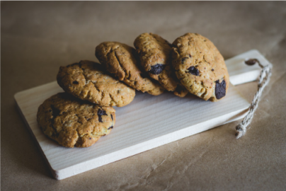

Recettes de cookies
Recette pour 6 personnes!

Ingrédients:
- 1 Oeuf
- 85g de sucre
- 85g de beurre
- 150g de farine
- 100g de pépite de chocolat
- 1 sachet de vanillé
- 1 cuillère à café de levure chimique
- 1/2 cuillère à café de sel
Préparation:
- Laissez ramollir le beurre à température ambiante. dans un saladier, malaxez
- Ajoutez l'oeuf et éventuellement le sucre vanillé
- Versez progressivement la farie, la levure chimique, le sel et les pépites de chocolat. Mélangez bien.
- Beurrez une plaque allant au four ou recouvrez-la d'une plaque de silicone. Â l'aide de deux cuillères à soupe ou simplement avec les mains, formez des noix de pâte en les espaçant car elles s'étaleront à la cuisson.
- Faites cuire 8 à 10 minutes à 180°C soit thermosta 6. Il faut les sortir dès que les contours commencent à brunir.